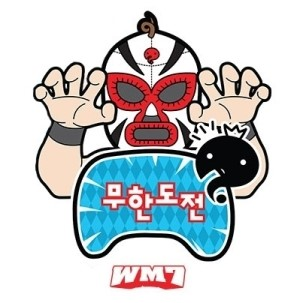

아디오스 무한도전 우리의 토요일 저녁 웃음을 책임지던 무한도전이 잠시만 인사를 드리게 되었습니다. 길면 길었고 짧다면 짧았던 13년을 함께 할 수 있어서 행복했습니다. 언젠가 무한도전이라는 이름으로 다시 만날 수 있기를 간절히 바랍니다.
정총무가 쏜다
기습 공격 방식으로 가게로 들어가 일정 장소에서 주어진 시간동안 마음껏
사재기를 한다. 여기서 구입한 물품은 반드시 소모해야 한다. 즉, 음식은
식당에서 반드시 먹어야 하며 단순히 싸 가려고 하는 행위 등은 금지. 책의
경우 소모가 불가능해서 추후 독후감과 독서퀴즈로 대체했다.
MORE→
무한상사 시리즈
권위적이고 앞뒤 꽉꽉 막힌 부장, 무조건 화부터 내고보는 차장, 뛰어난
스펙을 가졌지만 눈치를 청국장에 밥말아먹은 과장, 패션센스가 남다른 대리,
아부와 잔머리로만 연명하는 요령피우는 사원, 회사와 학교를 구분하지
못하는 천덕꾸러기 사원, 3년째 언제 짤릴지 모르는 시한부같은 비정규직
신세로 머물고 있는 인턴으로 분했습니다.
MORE→
명수는 12살
학창시절 늘 혼자였던 박명수를 위해 멤버들이 국민학생으로 돌아가 명수와
함께 추억의 놀이를 하는 캐릭터 상황극이다. 아직도 레전드 장면으로
회자되는 길의 만근추가 등장해 이날 캐릭터쇼 레전드편의 빅웃음을
담당했다해도 과언이 아니다.
MORE→
무인도 특집
시청자가 뽑은 최고의 특집 1위로 뽑힌 무인도 특집으로, 아무것도 없는
무인도에서 코코넛을 먹기 위해 야자수 나무를 타거나 제작진측에서 가끔
제공해주는 간식을 서로 쟁탈하며 큰 웃음을 샀다. 시청자 앙케이트에서 1위
로 뽑혀 10주년 기념으로 모두 정장을 입고 무인도를 다시 찾기도 했다.
MORE→
꼬리잡기
재석 ← 준하 ← 홍철 ← 전진 ← 형돈 ← 명수 ← 길 ← 재석 무관심
작전으로 정준하를 손쉽게 잡은 사기꾼 노홍철과 허무하게 잡혀버린 그의
충견 정준하가 빵터지는 빅웃음을 담당했다.
여의도 공원에서 펼쳐지는 추격전은 아직도 인상적이다.
MORE→
무한도전 가요제
강변북로 가요제 - 올림픽대로 듀엣가요제 - 서해안고속도로 가요제 -
자유로 가요제 - 영동고속도로 가요제 로 2년에 한번씩 진행되었으며
무한도전 가요제 외에도 노래부르는 경연을 한 회차도 있었다. 이는 2011년
나름 가수다 특집과 2012년 박명수의 어떤가요 특집으로 방송 시청률과
음원 모두 성공적으로 마쳤다.
MORE→
스피드 특집
휴스턴 국제 영화제 TV예능부분 은상 수상에 빛나는 특집으로 노홍철의 차를
폭발시키는 장면으로 처음에 이목을 끌었지만 3편에 걸쳐 나타내는 속 뜻은
독도에 관한 것이 었고, 이후 독도 특집으로도 불린다. 무한도전 덕분에
국민들도 독도에 대해서 조금 더 알게 된 계기가 되었다.
MORE→
여드름 브레이크
탈주범들과 형사들로 멤버들이 나뉘어졌는데, 이 특집을 추격전의 시초라고
볼 수 있을 정도로 많은 사랑을 받았다. 노홍철과 박명수가 돈가방을 두고
서로 견제하며 냉면을 먹는 장면은 많은 시청자들이 다시보고 싶은 명장면 1위
로 뽑기도 했다.
MORE→
2018.03.31
무한도전은 지난 2005년 4월 23일 황소와 줄다리기를 하고 전철과 달리기 경주를 하는 등 누가 봐도 무모해 보였던 ‘무모한 도전’을 시작으로 2006년 ‘무한도전’ 이름으로 국민예능 자리에 올랐다. ‘무한도전’은 최초의 리얼버라이어티 장르를 탄생시키며 13년, 무려 4725일간 매주 토요일 안방극장에 없어 선 안 될 프로그램이 됐다.
무한도전은 31일 ‘보고 싶다 친구야!’의 마지막 이야기를 담은 563회를 끝으로 첫 시즌을 종영했다. 많은 도전에 겁 없이 뛰어든 멤버들의 모습은 전 국민에게 웃음을 뛰어넘는 희망과 기적을 선사했고 한국인이 좋아하는 TV 프로그램 최다 1위에 뽑히며 ‘국민예능’ 자리를 굳건하게 지켜왔다.